CAREER · Factorial Games
Factorial Games
2018.07 ~ 2023.03 · 기획팀 사원 → 팀장 → PD · Mobile MMORPG Project Crazy (JustCause M)
전투 시스템 설계
듀얼 패드 조작만으로 그래플링 훅·윙슈트·파라슈트 같은 3D 이동기와 고도 차이가 있는 교전을 자연스럽게 풀어내는 것이 전투 시스템의 핵심 과제였습니다. Top Down 시점의 카메라 정책(회전 없음)을 유지하면서도 조작 난이도를 올리지 않는 해법을 설계했습니다.
고도 표현 자동 조준 시스템
| 구분 | 문제점 | 해결 방법 |
|---|---|---|
| 고도차 교전 | 헬기·저격 포인트 등 높낮이가 다른 대상을 Top Down 시점에서 공격해야 하는데, 카메라 각도를 바꾸거나 조작을 늘리는 방식은 쓸 수 없었음 | Aim 주변 탐색 영역 내 적을 X·Y축 거리만으로 판단해 자동으로 가장 가까운 대상을 타겟팅한 뒤, Aim을 타겟의 높이만큼 자동으로 끌어올리는 방식으로 해결 |
| SQEX 제안안 검토 | SQEX가 제안한 대안 5가지(에임 고정, 평면 사격 판정, 에임 세로 이동, 무기별 고정 탄도, 사격 시 카메라 전환) | 모두 조작 난이도 상승 또는 "카메라 방향 불변" 기조 위배로 반려하고, 위 자동 조준안으로 SQEX 합의 도출 |
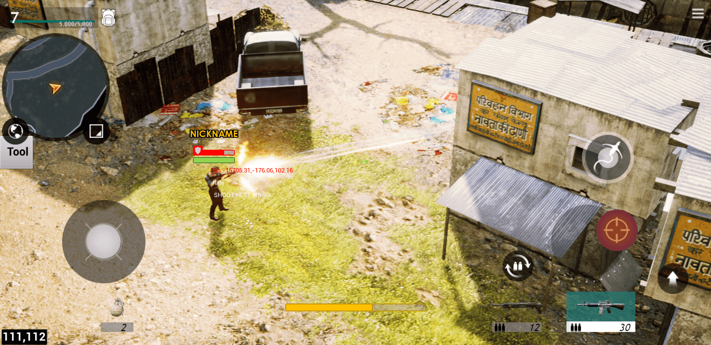
Top Down 교전 화면: 지상에서 고지대(건물 상층부) 대상까지 카메라 회전 없이 자동 조준
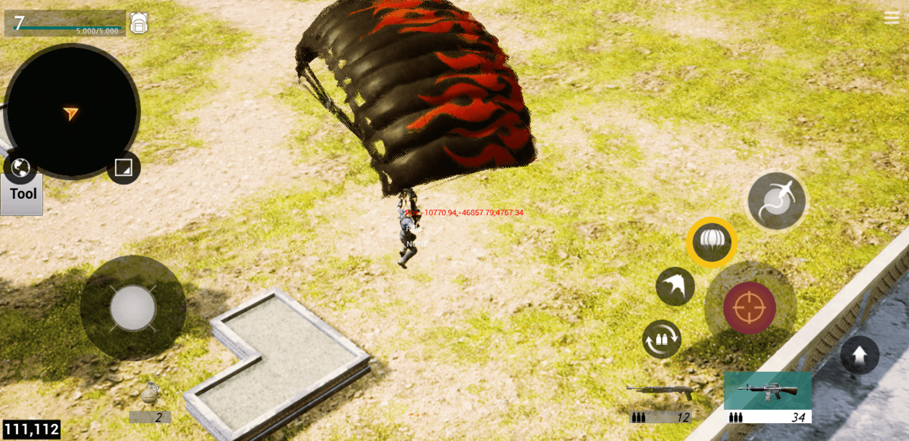
파라슈트 하강 장면: 우측 하단에 그래플링 훅·윙슈트 등 이동기 버튼 배치
스테미너 시스템
그래플링 훅·윙슈트·파라슈트(이동기) 사용을 개별 관리하지 않고 하나의 스테미너 자원으로 통합해 "제한된 자유"를 제공하는 시스템을 설계했습니다. MMORPG 특성상 이동기를 완전히 자유롭게 허용하면 밸런스가 무너지지만, 개별 쿨타임으로 관리하면 직관성이 떨어진다는 문제를 절충했습니다.
| 소모량 우선순위 | 윙슈트 > 파라슈트 > 그래플링 훅 순으로 소모량 차등 적용 (그래플링 당기기·대시는 소모 없음) |
|---|---|
| 회복·페널티 | 미입력 상태로 일정 시간 경과 시 초당 회복, 0이 되면 완전히 찰 때까지 이동기 사용 불가로 페널티 부여 |
| 성장 요소화 | 장비·MOD·룬으로 최대치 증가 및 소모량 감소를 투자할 수 있도록 설계해 성장 시스템과 연결 |
인스턴스 콘텐츠 구조 설계 (배틀존 · 미션존)
MMORPG 특성상 공용 필드에서는 다른 플레이어의 개입과 밸런스 조절 불가로 다이나믹한 전투 콘텐츠를 만들기 어렵다는 한계가 있었습니다. 이를 풀기 위해 인스턴스 던전 개념을 세계관에 맞게 배틀존 · 미션존으로 재정의하고, 콘텐츠 분류부터 매칭 · 예외 처리까지 체계 전체를 처음부터 설계했습니다. 이후 전투 불능 부활 규칙, TPS 전환의 PvP 매칭 등 다른 시스템들도 이 구조 위에서 확장되었습니다.
콘텐츠 체계 정의
| 위상 변화 | 같은 필드라도 이벤트 진행 여부에 따라 지형 · NPC가 다르게 보이도록 플레이어를 별도 위상으로 분리하는 개념, 배틀존 · 미션존은 이 개념을 UI 진입형 인스턴스 공간으로 구체화한 것 |
|---|---|
| 배틀존 | 반복 플레이 · 난이도 선택이 가능한 성장용 콘텐츠, 파괴 · 추격 · 보스전 등 필드에서 하기 어려운 다이나믹한 전투를 위해 사용 |
| 레이드 | 업적 · 미션 보상으로 얻는 티켓으로만 입장, 보스를 주기적으로 교체해 반복 플레이의 매너리즘을 방지 |
| 보급기지(소재 배틀존) | 장비 제작 · 강화용 소재를 확정 획득하는 일일 콘텐츠, 제한 횟수 소진 후에는 결제로만 추가 진행 |
| 미션존 | 배틀존과 구성은 같지만 반복 · 난이도 선택이 불가능한 싱글 플레이 전용, 미션 흐름에 따라 NPC · 프랍을 트리거로 이동하는 공간 |
콘텐츠 종류를 늘릴 때마다 왜 필요한지를 먼저 정의해 문서에 남기는 방식으로 설계했습니다. 예를 들어 레이드 보스를 매주 교체하는 규칙은 퍼즐앤드래곤의 갓 페스티벌을 참고 사례로 들어, 같은 콘텐츠를 반복하며 생기는 매너리즘을 방지하기 위함이라고 근거를 명시했습니다.
매칭 시스템과 예외 처리
| 상황 | 발생 이슈 | 처리 방식 |
|---|---|---|
| 서버 분산 접속 | 서로 다른 서버에 있는 플레이어들이 비슷한 시점에 매칭을 시도하면 통신 지연으로 패킷이 누락될 수 있음 | 팀 리더만 매칭 · 스쿼드 생성을 시작할 수 있도록 제한, 접속 끊김 플레이어는 재접속 대기 시간 동안 진입 여부를 다시 물어 부당 이득을 방지 |
| 매칭 중 초대 수락 | 매칭이 이미 시작된 뒤 초대를 수락하는 플레이어의 배치 기준이 필요함 | 빈 슬롯이 있으면 즉시 합류, 정원이 찼으면 정원 초과 팝업으로 안내 |
| 매칭 중 팀 탈퇴 | 팀과 스쿼드 UI가 분리되어 있지 않아 탈퇴 범위가 모호함 | 팀에서 탈퇴하면 스쿼드 · 매칭도 함께 취소되도록 통일해 상태 불일치를 제거 |
팀(필드, 최대 4인)과 스쿼드(배틀존 UI, 콘텐츠별 인원 상한 상이)를 별도 단위로 나누고, 매칭 종료 후 다시하기를 선택한 인원과 탈퇴하기를 선택한 인원이 섞이면 팀을 해산하는 등 종료 시점의 규칙까지 정의해 매칭 흐름 전체에 빈틈이 없도록 관리했습니다.
SQEX와의 UI 확정 프로세스 협의
미션 개요서 리뷰 과정에서 SQEX가 화면 이동 정의, 화면 요소 정의, 정식 디자인 확정의 3단계 프로세스를 제안했습니다. 나중에 가서 이미 확정된 것으로 오해해 수정이 불가능해지는 상황을 막기 위한 절차였는데, 현재 문서가 몇 단계에 해당하는지와 다국어 대응을 고려해 텍스트보다 그래픽 위주로 UI를 구성하겠다는 방침을 답변으로 명시하며 협의를 진행했습니다.
전투 불능 · 부활 시스템
"체력이 0이 되면 할 게 없어 지루하다"는 문제를 풀기 위해, 죽음을 곧바로 실패로 처리하지 않고 빈사 → 전투 불능 2단계로 나눈 뒤 상황별 부활 방법 4종을 설계했습니다. SQEX와 세부 규칙을 여러 차례 조율하며 완성했습니다.
2단계 상태와 부활 방법
| 빈사 상태 | 체력 0이 되면 일정 시간 빈사 상태가 되며, 이 시간 동안만 아군의 도움으로 부활 가능 |
|---|---|
| 전투 불능 상태 | 빈사 시간이 만료되면 전환되며, 이후로는 아군에 의한 부활 불가 (즉시 부활 · 부활 포인트 이동만 가능) |
| 아군에 의한 부활 | 빈사 상태인 플레이어 주변 "부활 영역"에 아군이 일정 시간 머물러야 부활, 이탈 시 진행도 감소 |
| 즉시 부활 | 재화(다이아몬드) 소모, 연속 사용 시 비용 누적 증가 · 일정 시간 미사용 시 초기 비용으로 리셋 |
| 부활 포인트에서 부활 | 가장 가까운 활성화된 포인트에서 부활 (배틀존 · 미션존 콘텐츠에서는 사용 불가) |
| 미션 실패 | 배틀존 · 미션존처럼 폐쇄적 콘텐츠에서 스쿼드 전원이 전투 불능이 되면 콘텐츠 종료 |
콘텐츠 유형(일반 필드 · 배틀존 · 미션존 · GvG)별로 위 4가지 부활 방법 중 허용되는 조합을 표로 정리해 규칙 충돌이 없도록 관리했습니다.
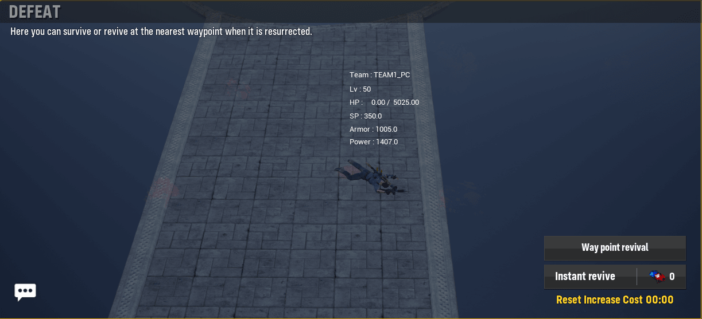
전투 불능 화면: 부활 옵션(포인트 이동 · 즉시 부활)과 즉시 부활 비용 리셋 타이머 표시
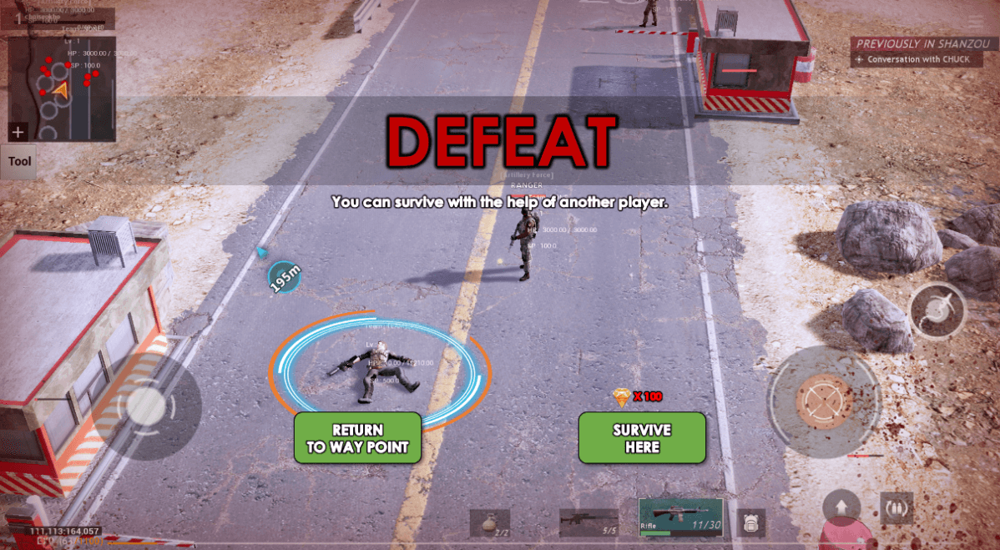
아군에 의한 부활 대기: 부활 영역 FX와 부활 대기 시간 게이지 표시, "SURVIVE HERE"로 즉시 부활 전환 가능
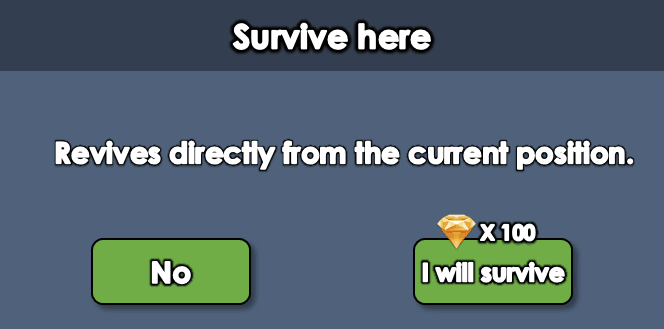
즉시 부활 확인 팝업: 재화(다이아몬드) 소모 안내, 재화 부족 시 상점으로 유도
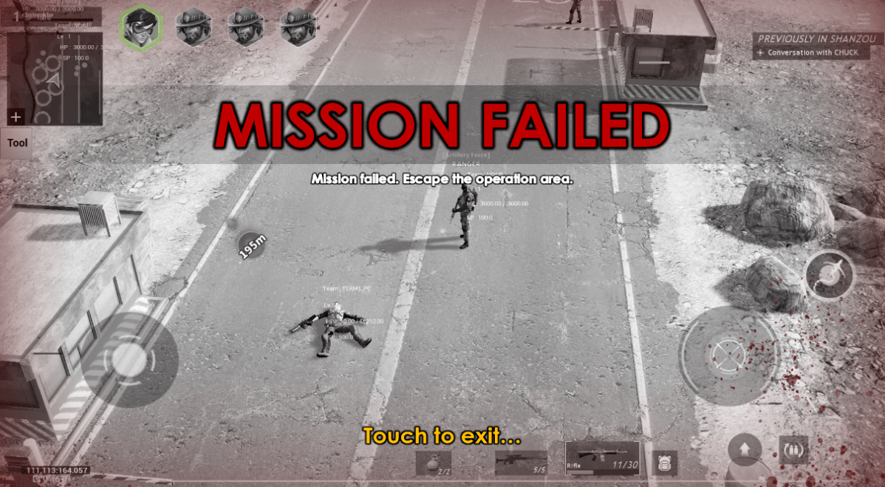
미션 실패 화면: 폐쇄형 콘텐츠에서 스쿼드 전원 전투 불능 시 종료 처리
TPS · PvP 전면 전환
소프트 런칭 이후 새로 부임한 SQEX PD로부터 듀얼 패드 슈팅 MMORPG(Top Down 시점)를 TPS PvP로 전면 전환해달라는 요청을 받았습니다. 카메라·조작 체계를 바꾸는 것은 물론, MMORPG 콘텐츠 전반을 매칭 기반 PvP 콘텐츠로 다시 설계해야 하는 작업이라 팀 내에서도 불가능하다는 의견이 많았지만, 전투 핵심 인원으로 TFT를 꾸려 일주일 만에 방향성을 정의하고 완성도보다 "재미가 있는지"부터 빠르게 검증하는 방식으로 접근했습니다.
카메라 · 조작 전환
고도 표현 자동 조준으로 풀어왔던 Top Down 듀얼 패드 조작을, 배경이 화면을 가리지 않고 조준선이 직관적으로 보이는 TPS 어깨너머 시점으로 전면 교체했습니다. 그래플링 훅 · 파라슈트 등 기존 이동기 버튼 배치와 무기 조작 체계는 최대한 유지해, 팀원들이 기존에 만든 애셋과 밸런스를 크게 갈아엎지 않고도 새 시점에 적응할 수 있도록 했습니다.
| 구분 | 전환 전 (Top Down) | 전환 후 (TPS) |
|---|---|---|
| 카메라 | 고정 각도의 부감 시점, 회전 없음 | 캐릭터 어깨너머 시점, 드래그로 카메라 회전 가능 |
| 조준 | 고도 차이를 자동 보정하는 오토 타겟팅 위주 | 화면 중앙 조준선 기반 수동 조준으로 전환, 헤드샷 등 부위별 대미지 개선 예정 항목으로 별도 정리 |
| 이동기 · 사격 버튼 | 원형 패드 하단에 그래플링 훅 · 윙슈트 · 파라슈트 배치 | 동일한 버튼 배치를 유지하되 위치 표시(FX, 크로스헤어 등)만 TPS 시점에 맞게 재조정 |
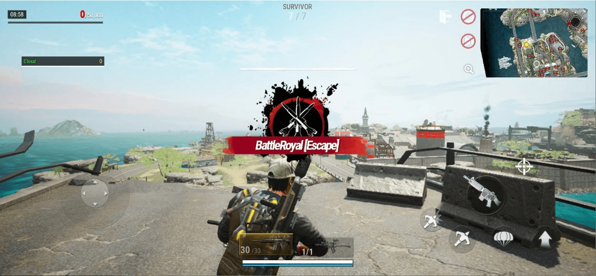
모드 진입 화면: 어깨너머 시점으로 전환된 이후의 항구 지역 전경
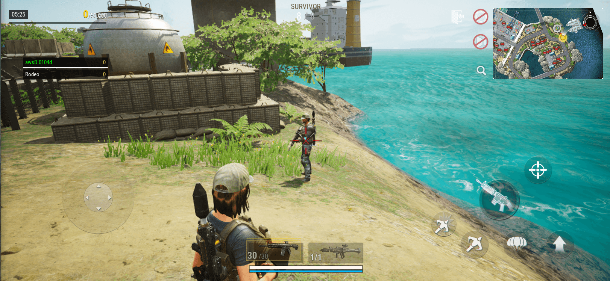
TPS 조준 화면: 화면 중앙 조준선과 무기 · 미니맵 HUD, 이동기 버튼 배치
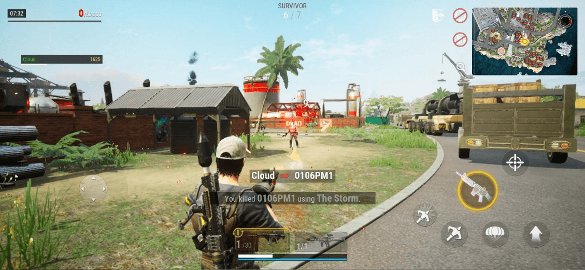
실전 교전 화면: TPS 시점에서 실제로 PvP 교전과 킬 로그가 정상 동작하는 것을 확인
PvP 콘텐츠 재설계
기존 MMORPG의 필드 · 미션 콘텐츠를 매칭 기반의 단발성 PvP 콘텐츠로 재설계했습니다. 최소 5인 · 최대 20인을 5팀으로 매칭하고, 구조물 파괴와 상대 처치로 얻은 개인 점수를 헬기 등 지정 지점에서 팀 점수로 저장하는 방식의 규칙을 새로 정의했습니다.
| 매칭 규칙 | 최소 5인 · 최대 20인, 5인 단위로 최대 5팀 구성. 1분간 매칭 진행 후 5인 이상이면 인원 미달이어도 시작 |
|---|---|
| 점수 시스템 | 구조물 파괴(파괴 점수) · 상대 처치(처치 점수, 처치 시 상대 개인 점수 탈취)로 개인 점수 획득 |
| 점수 저장 | 사망 시 개인 점수를 잃으므로, 맵에 주기적으로 스폰되는 헬기 지점에서 공용(팀) 점수로 저장 |
| 종료 조건 | 8분 제한 시간 종료 시 공용 점수가 가장 높은 팀이 승리, 사망 시 30초 후 제자리 부활 |
진행 중 확정한 규칙과 알려진 이슈 · 개선 예정 항목은 빌드 가이드 문서로 정리해 QA 및 팀 전체에 공유했습니다.
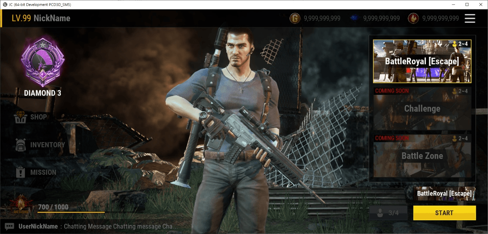
전환 후 로비 화면: 콘텐츠 카드 · 캐릭터 프리뷰 · 매칭 시작(START) 버튼 구성
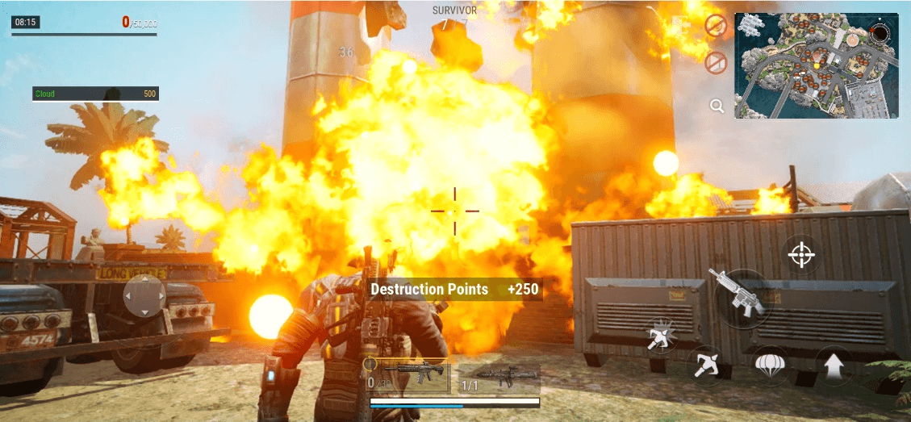
구조물 파괴 콘텐츠: 파괴 시 Destruction Points 획득, 개인 점수로 누적
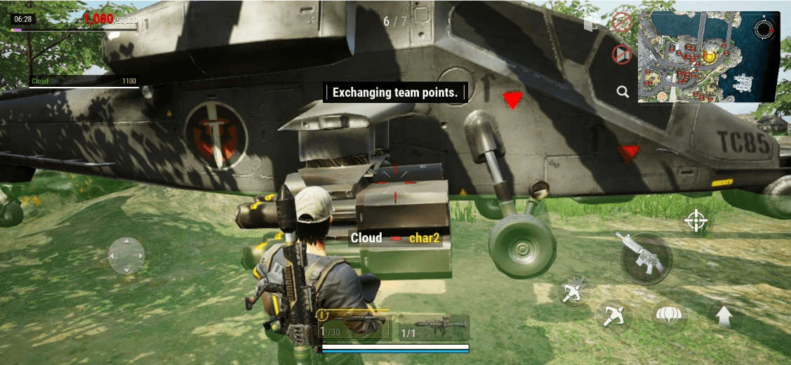
점수 저장 화면: 헬기 지점에서 개인 점수를 팀(공용) 점수로 교환
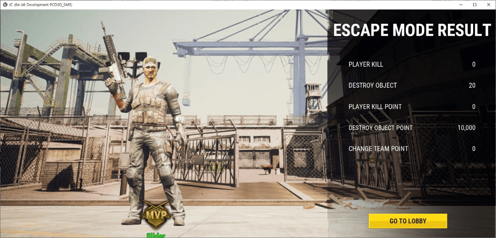
라운드 결과 화면: Player Kill · Destroy Object 등 항목별 점수와 MVP 표시
진행 방식
| 조직 | 전투 핵심 인원 위주로 TFT 구성, 상세 기획서 대신 간단한 명세와 히스토리 기록으로 개발 진행 |
|---|---|
| 검증 순서 | 완성도보다 "재미 여부"를 먼저 확인, 개발 · 테스트 · 피드백을 짧은 주기로 반복 |
| 범위 | 카메라 · 조작 전환과 PvP 콘텐츠 재설계를 마일스톤 기간 내 병행 진행 |
전환 직후 진행한 사내 설문에서 "원작(저스트 코즈)의 느낌을 더 잘 계승한다", "기획서 없이도 히스토리를 남겨 문제가 없었다" 등 TPS 전환과 TFT 운영 방식에 대한 긍정적인 반응을 받았고, 동시에 "TFT별로 진행 방식이 달라 추후 룰 정리가 필요하다"는 개선 의견도 함께 수렴해 이후 TFT 운영 기준을 다듬는 데 반영했습니다. 이 마일스톤 이후 실제로 전투 핵심 시스템을 유지한 채 장르 전환에 성공했습니다.